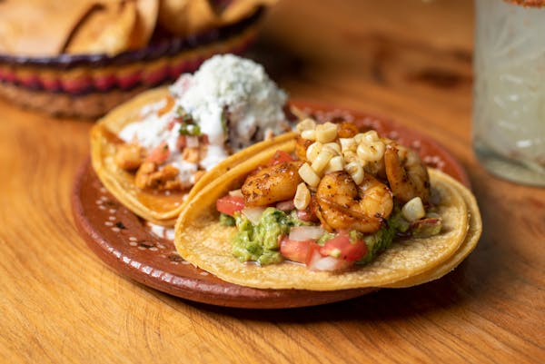

500 gram daging sapi cincang
1 bawang bombay, cincang halus
3 siung bawang putih, cincang halus
1 sendok makan minyak zaitun
1 sendok teh bubuk cabai
1 sendok teh jintan bubuk
1/2 sendok teh paprika
1/2 sendok teh oregano
Garam dan merica secukupnya
Selada, cincang
Tomat, potong dadu
Keju cheddar, parut
Krim asam (sour cream)
Saus salsa
Irisan jalapeño (opsional)
Perasan jeruk nipis
2. Tambahkan Daging Sapi: Masukkan daging sapi cincang ke dalam wajan. Masak hingga daging berubah warna dan matang sepenuhnya. Tiriskan lemak berlebih.
3. Bumbui Daging: Tambahkan bubuk cabai, jintan, paprika, oregano, garam, dan merica ke dalam daging. Aduk rata dan masak selama beberapa menit hingga bumbu meresap.
4. Panaskan Tortilla: Panaskan tortilla di atas wajan atau langsung di atas api kompor hingga sedikit menggelembung dan hangat. Jangan biarkan terlalu lama agar tidak menjadi keras.
5. Rakit Tacos: Letakkan daging sapi berbumbu di atas tortilla. Tambahkan selada cincang, tomat potong dadu, keju parut, krim asam, dan saus salsa. Tambahkan irisan jalapeño jika suka.
6. Tambahkan Perasan Jeruk Nipis: Untuk sentuhan ekstra, tambahkan sedikit perasan jeruk nipis di atas taco sebelum disajikan.
Tacos
Bahan-bahan
8 tortilla jagung atau gandum500 gram daging sapi cincang
1 bawang bombay, cincang halus
3 siung bawang putih, cincang halus
1 sendok makan minyak zaitun
1 sendok teh bubuk cabai
1 sendok teh jintan bubuk
1/2 sendok teh paprika
1/2 sendok teh oregano
Garam dan merica secukupnya
Selada, cincang
Tomat, potong dadu
Keju cheddar, parut
Krim asam (sour cream)
Saus salsa
Irisan jalapeño (opsional)
Perasan jeruk nipis
Instruksi
1. Masak Daging Sapi: Panaskan minyak zaitun di atas wajan besar dengan api sedang. Tumis bawang bombay dan bawang putih hingga harum dan lembut.2. Tambahkan Daging Sapi: Masukkan daging sapi cincang ke dalam wajan. Masak hingga daging berubah warna dan matang sepenuhnya. Tiriskan lemak berlebih.
3. Bumbui Daging: Tambahkan bubuk cabai, jintan, paprika, oregano, garam, dan merica ke dalam daging. Aduk rata dan masak selama beberapa menit hingga bumbu meresap.
4. Panaskan Tortilla: Panaskan tortilla di atas wajan atau langsung di atas api kompor hingga sedikit menggelembung dan hangat. Jangan biarkan terlalu lama agar tidak menjadi keras.
5. Rakit Tacos: Letakkan daging sapi berbumbu di atas tortilla. Tambahkan selada cincang, tomat potong dadu, keju parut, krim asam, dan saus salsa. Tambahkan irisan jalapeño jika suka.
6. Tambahkan Perasan Jeruk Nipis: Untuk sentuhan ekstra, tambahkan sedikit perasan jeruk nipis di atas taco sebelum disajikan.